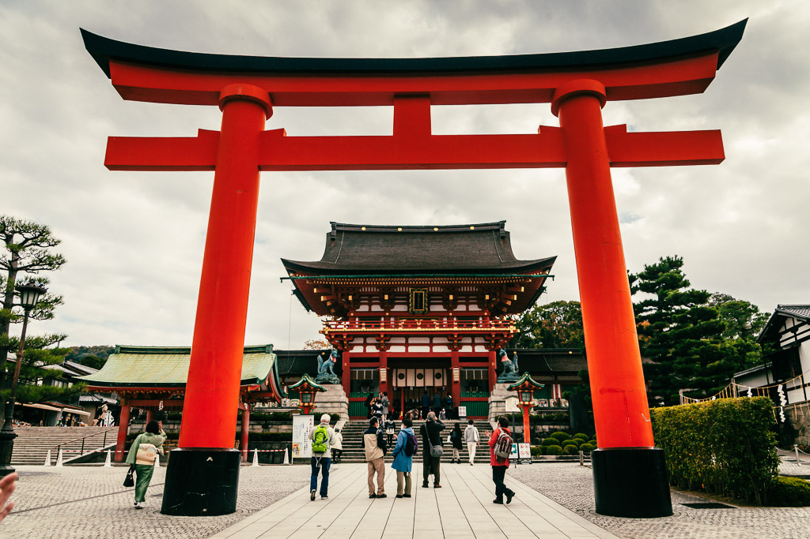
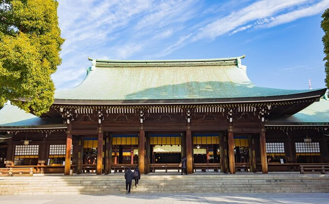

| SITIOS TURISTICOS |
|---|
| Index Historia y Detalles del Pais Cultura de Japon Monumentos de Japon Leyendas de Japón |
|  |
| Fushimi Inari Taisha en Kioto: Aunque el acceso al santuario es gratuito, la entrada a las áreas principales y ciertos caminos específicos dentro de las montañas tiene un costo. |
Dirección: 68 Fushimi Inari, Fushimi Ward, Kyoto, 612-0882, Japón. Horario: El santuario está abierto todo el día, las 24 horas, aunque las tiendas y otros servicios cercanos suelen tener horarios más limitados, generalmente de 9:00 a 17:00. |
|  |
| Santuario Meji en Tokio: La entrada al santuario es gratuita, pero el acceso a las áreas del museo o a las actividades rituales pueden tener un costo adicional |
Dirección: 1-1 Yoyogikamizono, Shibuya City, Tokio 151-8557, Japón Horario: El santuario está abierto todos los días, de 5:00 a 18:00 (con horarios extendidos hasta las 17:00 durante el invierno). |
| TODOS LOS DERECHOS RESERVADOS 2025 |